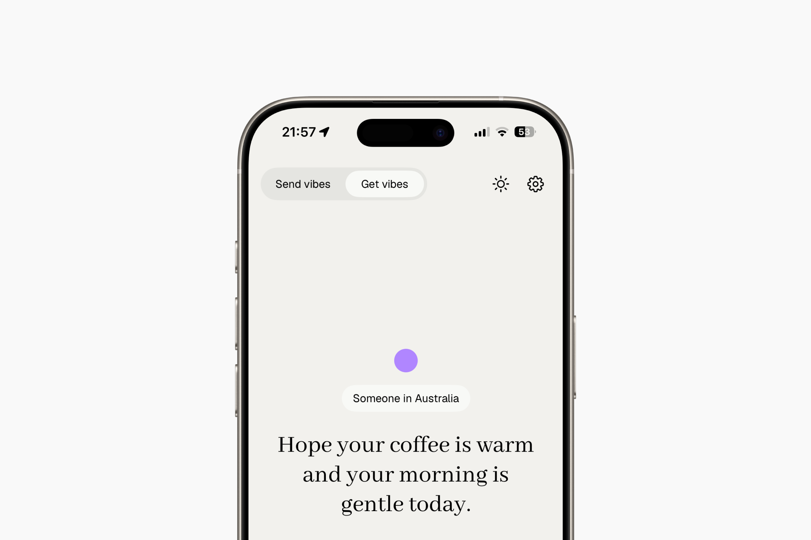
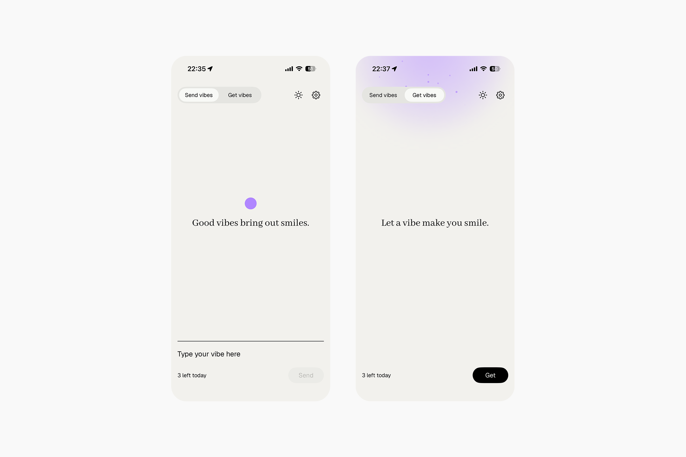
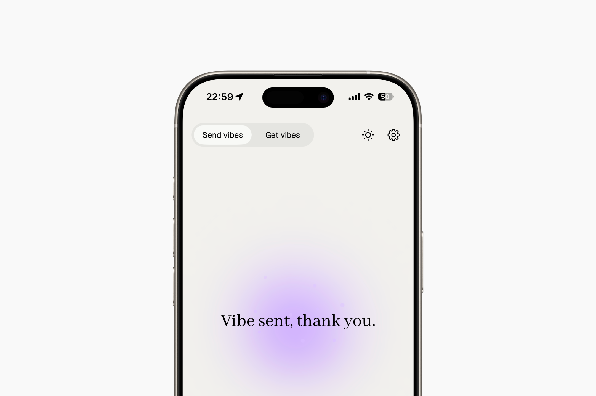
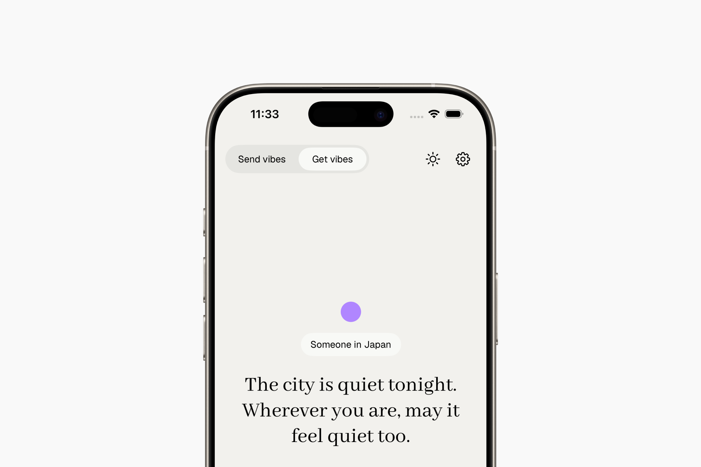
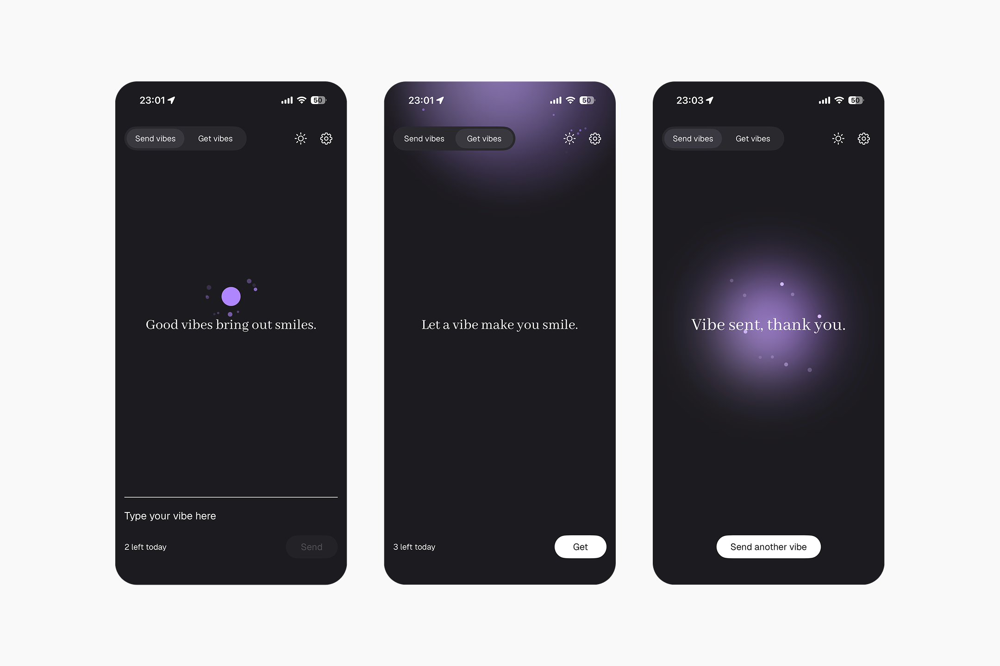
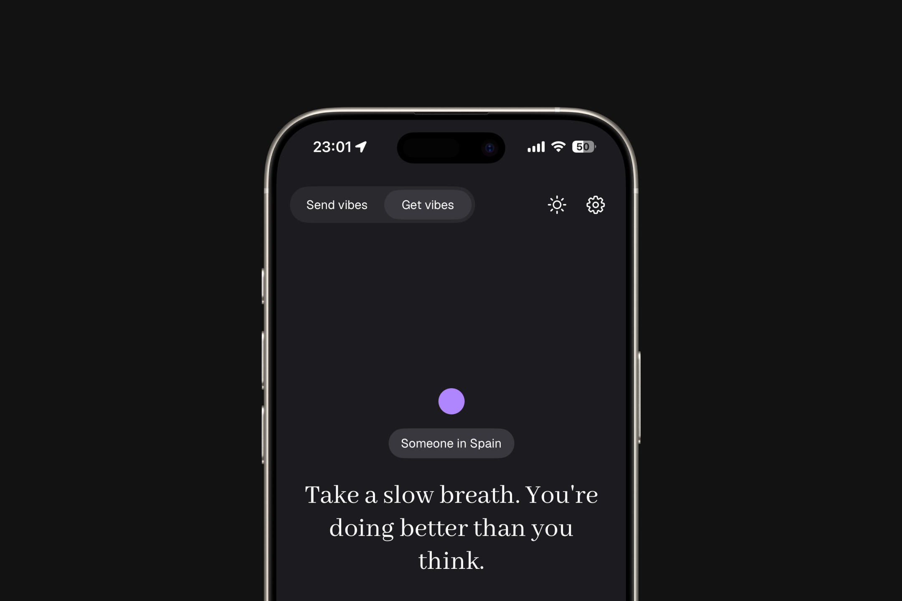
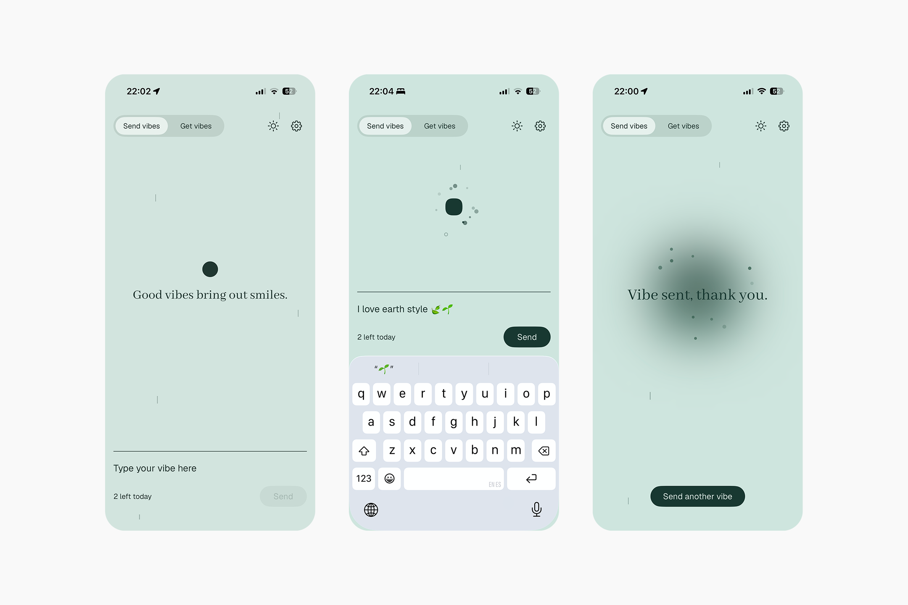

Goodvibes is an iOS app I built myself using Claude. The goal of the app is to send and receive good vibes (positive messages) in a simple, anonymous, and selfless way.
Goodvibes is an iOS app I built myself using Claude. The goal of the app is to send and receive good vibes (positive messages) in a simple, anonymous, and selfless way.

The idea
A stranger looked me in the eye and said, "It was going to rain, but it's all sun — one way or another, it's a beautiful day." No context, no conversation before it. Just a stranger's kindness. That stuck with me, and it became the idea for an app that does exactly that: passes positive messages between strangers, just to bring a smile to someone's day.
Sending vibes
Easy. Simple. Fast. Write a good vibe, send it off, and it reaches a stranger, someone who speaks your language and is waiting for one. No sign-up, nothing saved, nothing tracked. Ephemeral and spontaneous.
Getting vibes
When you want to receive a good vibe, simply click the GET button and an anonymous message will reach you instantly.
Look and feel
A simple, easy-to-use design with quality details bring the app to life. Minimal, with a touch of warmth. The mix of contrasting typefaces, soft colors, and one bolder accent color give the UI its character.





'Vibe', the app mascot
The idea was to give the app a touch of color while keeping its essential simplicity. That touch had to be small — a detail, not something that steals the spotlight. After several rounds of iteration, I kept simplifying until I landed on a friendly, continuous, unmistakable geometric shape: the circle. Vibe is a living component that follows the user through their different actions.
Earth theme
To go along with the familiar light and dark themes, I designed a third one: Earth. A subtle blend of jungle colors, paired with a soft, randomized rain effect, makes this view a relaxed alternative that conveys peace and nature.

Conclusions
This project has been (and still is, since I'm still iterating on it) a genuine satisfaction. Being able to design an idea and turn it into a real product is something that, a few years ago, would have been unthinkable. AI is a powerful thing that's changing how we communicate and work. It doesn't replace teamwork or contact with colleagues and other professionals, something I consider essential to both professional and personal success, but putting it to the test and seeing its limits has been a lot of fun!